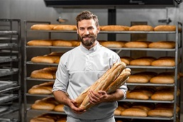

Nastya
Pryvit, ya Nastya
Vzhe 10 rokiv ya vtilyuyu v zhyttya tsikavi ta smachni idei.
Ya vypechu dlya vas naismachnishi vyroby
shop bakery - tse pekarnya, yaka vzyala vse naikrasche, i zberehla smak tradytsiinoi vypichky ta naturalnist ingridientiv.
My pratsyuemo yak naividomishi merezhi - 5 khvylyn i zamovlennya hotove. A sche u nashych pekaren stylnyi dyzain ta vysoka yakist obsluhovuvannya!
Pryvit, ya Nastya
Vzhe 10 rokiv ya vtilyuyu v zhyttya tsikavi ta smachni idei.
Ya vypechu dlya vas naismachnishi vyroby
Pryvit, ya Vlad
Mii kondyterskyi stazh vzhe 18 rokiv. SHOP BAKERY - tse nasha lyubov, z yakoyu ma dilymos kozhen raz z Vamy cherez nashu vypichku.
Ya zroblyu dlya vas unikalnu nachynku na bud-yakyi smak.